Photo credits
The demo catalogue uses openly licensed photographs from Wikimedia Commons and from Open Food Facts, Open Beauty Facts and Open Products Facts. Each was cropped and resized for this shop; nothing else was changed.
Brand names and packaging that appear in the photos belong to their owners and only illustrate the products. NestMart's own brand names are placeholders.
| Product | Author | Licence | Source | |
|---|---|---|---|---|
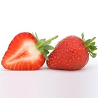 | Fresh Strawberries | Robert Owen-Wahl (Meditations) | CC0 | Wikimedia Commons |
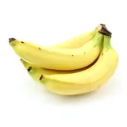 | Bananas | Justus Blümer from Deutschland | CC BY 2.0 | Wikimedia Commons |
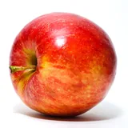 | Red Apples | Abhijit Tembhekar from Mumbai, India | CC BY 2.0 | Wikimedia Commons |
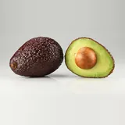 | Ripe Avocados | Ivar Leidus | CC BY-SA 4.0 | Wikimedia Commons |
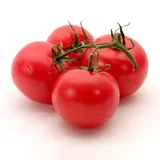 | Vine Tomatoes | Softeis | CC BY-SA 3.0 | Wikimedia Commons |
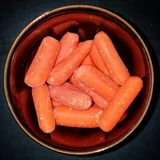 | Baby Carrots | Daderot | CC0 | Wikimedia Commons |
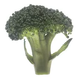 | Broccoli Crown | Renee Comet (Photographer) | Public domain | Wikimedia Commons |
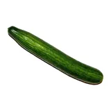 | Cucumbers | WiseMan42 | CC0 | Wikimedia Commons |
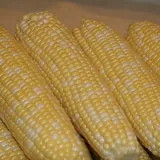 | Sweet Corn | Nutrition, Food Safety & Health | CC0 | Wikimedia Commons |
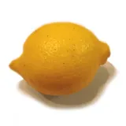 | Lemons | Bordercolliez | CC0 | Wikimedia Commons |
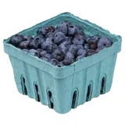 | Blueberries | Evan-Amos | CC0 | Wikimedia Commons |
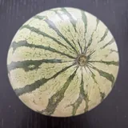 | Seedless Watermelon | HaJunkiyada | CC BY-SA 4.0 | Wikimedia Commons |
| Fresh Whole Milk | Open Food Facts contributors | CC BY-SA 3.0 | Open Food Facts | |
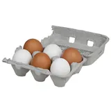 | Free Range Eggs | Evan-Amos | Public domain | Wikimedia Commons |
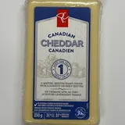 | Mature Cheddar | Dillan Payne | CC BY-SA 4.0 | Wikimedia Commons |
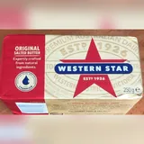 | Salted Butter | Open Food Facts contributors | CC BY-SA 3.0 | Open Food Facts |
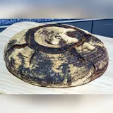 | Sourdough Loaf | Virtual-Pano | CC BY-SA 4.0 | Wikimedia Commons |
| Butter Croissants | Herry Wibisono (herryway) | CC0 | Wikimedia Commons | |
| Butter Croissants | SKopp | CC BY-SA 3.0 | Wikimedia Commons | |
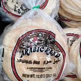 | Arabic Bread | RaffiKojian | CC BY 4.0 | Wikimedia Commons |
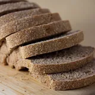 | Wholewheat Sandwich Loaf | Veganbaking.net | CC BY-SA 2.0 | Wikimedia Commons |
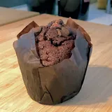 | Double Chocolate Muffins | Amin | CC BY-SA 4.0 | Wikimedia Commons |
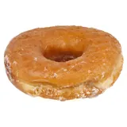 | Glazed Donuts | Evan-Amos | Public domain | Wikimedia Commons |
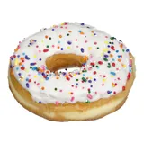 | Glazed Donuts | Evan-Amos | Public domain | Wikimedia Commons |
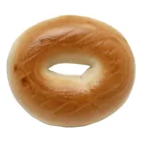 | Plain Bagels | Evan-Amos | Public domain | Wikimedia Commons |
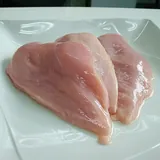 | Chicken Breast Fillets | kakyusei | CC0 | Wikimedia Commons |
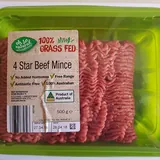 | Lean Beef Mince | Maksym Kozlenko | CC BY-SA 4.0 | Wikimedia Commons |
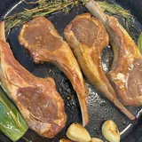 | Lamb Chops | HaJunkiyada | CC BY-SA 4.0 | Wikimedia Commons |
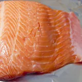 | Atlantic Salmon Fillet | Tiia Monto | CC BY-SA 3.0 | Wikimedia Commons |
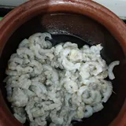 | Jumbo Shrimp | Vis M | CC BY-SA 4.0 | Wikimedia Commons |
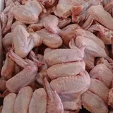 | Chicken Wings | ProjectManhattan | CC BY-SA 3.0 | Wikimedia Commons |
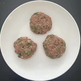 | Beef Burger Patties | HaJunkiyada | CC BY-SA 4.0 | Wikimedia Commons |
| Orange Juice | Agency of the United States Department of Agriculture Edited Version by: Arad | Public domain | Wikimedia Commons | |
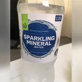 | Sparkling Water | Open Food Facts contributors | CC BY-SA 3.0 | Open Food Facts |
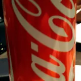 | Classic Cola | Open Food Facts contributors | CC BY-SA 3.0 | Open Food Facts |
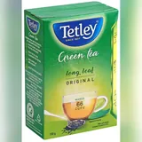 | Green Tea Bags | Open Food Facts contributors | CC BY-SA 3.0 | Open Food Facts |
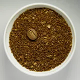 | Ground Coffee | Alorin | CC BY 4.0 | Wikimedia Commons |
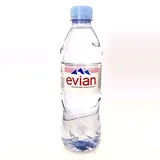 | Natural Mineral Water | James Tamim | CC BY-SA 4.0 | Wikimedia Commons |
| Mango Nectar | Open Food Facts contributors | CC BY-SA 3.0 | Open Food Facts | |
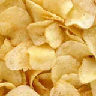 | Sea Salt Potato Chips | Evan-Amos | Public domain | Wikimedia Commons |
| Dark Chocolate Bar | Mx. Granger | CC0 | Wikimedia Commons | |
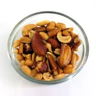 | Roasted Mixed Nuts | User:Melchoir | CC BY-SA 3.0 | Wikimedia Commons |
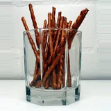 | Salted Pretzels | ChrisHH | CC BY-SA 3.0 | Wikimedia Commons |
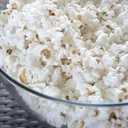 | Butter Popcorn | Alex Munsell alexmunsell | CC0 | Wikimedia Commons |
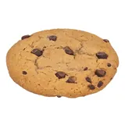 | Choc Chip Cookies | Evan-Amos | Public domain | Wikimedia Commons |
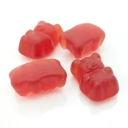 | Fruity Gummy Bears | Mx. Granger | CC0 | Wikimedia Commons |
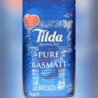 | Basmati Rice | Open Food Facts contributors | CC BY-SA 3.0 | Open Food Facts |
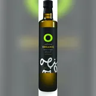 | Extra Virgin Olive Oil | Open Food Facts contributors | CC BY-SA 3.0 | Open Food Facts |
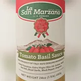 | Tomato Pasta Sauce | Open Food Facts contributors | CC BY-SA 3.0 | Open Food Facts |
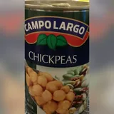 | Chickpeas | Open Food Facts contributors | CC BY-SA 3.0 | Open Food Facts |
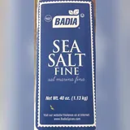 | Fine Sea Salt | Open Food Facts contributors | CC BY-SA 3.0 | Open Food Facts |
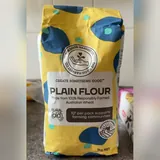 | Plain Flour | Open Food Facts contributors | CC BY-SA 3.0 | Open Food Facts |
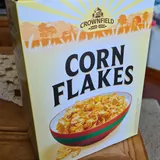 | Crunchy Corn Flakes | Open Food Facts contributors | CC BY-SA 3.0 | Open Food Facts |
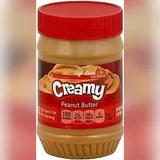 | Creamy Peanut Butter | Open Food Facts contributors | CC BY-SA 3.0 | Open Food Facts |
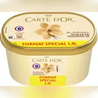 | Vanilla Bean Ice Cream | Open Food Facts contributors | CC BY-SA 3.0 | Open Food Facts |
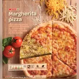 | Margherita Pizza | Open Food Facts contributors | CC BY-SA 3.0 | Open Food Facts |
| Crinkle Cut Fries | Open Food Facts contributors | CC BY-SA 3.0 | Open Food Facts | |
| Garden Mixed Vegetables | Open Food Facts contributors | CC BY-SA 3.0 | Open Food Facts | |
| Breaded Fish Fingers | Open Food Facts contributors | CC BY-SA 3.0 | Open Food Facts | |
| Air Freshener Spray | Open Food Facts contributors | CC BY-SA 3.0 | Open Beauty Facts | |
| Dishwashing Liquid | Open Food Facts contributors | CC BY-SA 3.0 | Open Products Facts | |
| Laundry Detergent | Open Food Facts contributors | CC BY-SA 3.0 | Open Products Facts | |
| Kitchen Paper Towels | Open Food Facts contributors | CC BY-SA 3.0 | Open Products Facts | |
| All-Purpose Cleaner | Open Food Facts contributors | CC BY-SA 3.0 | Open Products Facts | |
| Nourishing Shampoo | Open Food Facts contributors | CC BY-SA 3.0 | Open Beauty Facts | |
| Antibacterial Hand Wash | Open Food Facts contributors | CC BY-SA 3.0 | Open Beauty Facts | |
| Moisturising Body Lotion | Open Food Facts contributors | CC BY-SA 3.0 | Open Beauty Facts | |
| Soft Facial Tissues | Open Food Facts contributors | CC BY-SA 3.0 | Open Products Facts | |
| Roll-on Deodorant | Open Food Facts contributors | CC BY-SA 3.0 | Open Beauty Facts | |
| Moisturising Soap Bars | Open Food Facts contributors | CC BY-SA 3.0 | Open Beauty Facts | |
| Sensitive Shaving Foam | Open Food Facts contributors | CC BY-SA 3.0 | Open Beauty Facts | |
| Aftershave Balm | Open Food Facts contributors | CC BY-SA 3.0 | Open Beauty Facts | |
| Baby Diapers Size 3 | Open Food Facts contributors | CC BY-SA 3.0 | Open Products Facts | |
| Baby Wipes | Open Food Facts contributors | CC BY-SA 3.0 | Open Beauty Facts | |
| Gentle Baby Shampoo | Open Food Facts contributors | CC BY-SA 3.0 | Open Beauty Facts | |
| Baby Cereal | Open Food Facts contributors | CC BY-SA 3.0 | Open Food Facts | |
| Adhesive Bandages | Open Food Facts contributors | CC BY-SA 3.0 | Open Beauty Facts |

.jpg){kind=link}


_-_Arlington,_MA.jpg){kind=link}


.jpg){kind=link}


.jpg){kind=link}


.jpg){kind=link}